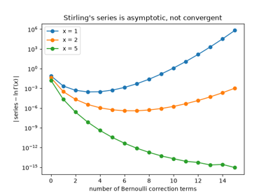
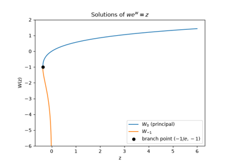
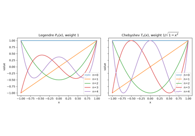
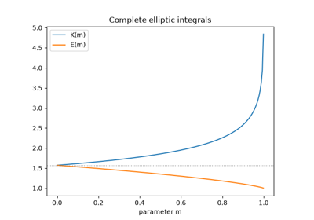
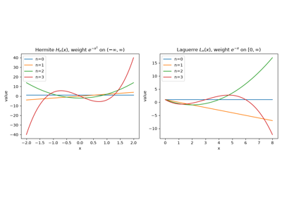
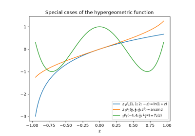
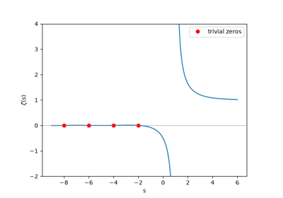
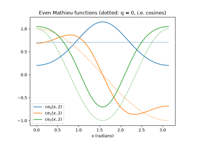
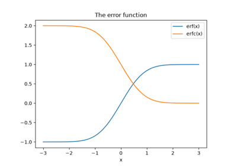

Breakthroughs in Special Functions and Transforms#
“I have had my results for a long time, but I do not yet know how I am to arrive at them.” – attributed to Carl Friedrich Gauss
The “special functions” – gamma, Bessel, the orthogonal polynomial
families – are special because they keep recurring, unbidden, as exact
solutions of a huge range of unrelated differential equations, from
vibrating drumheads to quantum wavefunctions. This chronology traces the
ideas behind mathematicskit.special_functions, from Leonhard
Euler’s extension of the factorial to the fast Fourier transform, an
algorithm rediscovered from a much older idea that made digital signal
processing computationally feasible.
1729 – Euler’s Gamma Function#
Christian Goldbach asked how the factorial could be extended to non-integer values. Leonhard Euler answered in an October 1729 letter with an infinite-product formula for such an interpolation, and gave the integral form early the next year. Adrien-Marie Legendre later named the function \(\Gamma\). It satisfies \(\Gamma(n) = (n-1)!\) at positive integers and extends smoothly everywhere else, with poles at zero and the negative integers. The closely related beta integral \(B(a,b)\), which Euler also studied and Jacques Binet named in 1839, can be written directly in terms of \(\Gamma\).
Implementation: mathematicskit.special_functions.systems.gamma_beta.gamma_function()
and beta_function()
wrap scipy.special.gamma()/beta() directly.
log_gamma_function()
wraps the numerically stable scipy.special.gammaln() for arguments
large enough that \(\Gamma\) itself would overflow.
References: L. Euler, letter to C. Goldbach, 13 October 1729, in P.-H. Fuss, ed., Correspondance mathématique et physique de quelques célèbres géomètres du XVIIIème siècle, vol. 1 (St. Petersburg, 1843), 56-60.

1730 – Stirling’s Formula#
Abraham de Moivre, studying the binomial distribution, found in 1730 that \(n!\) grows like \(C\,n^{n+1/2}e^{-n}\) for some constant \(C\). In the same year James Stirling’s Methodus Differentialis identified the constant as \(\sqrt{2\pi}\):
The approximation is already good to 1% at \(n = 10\), and its relative error shrinks like \(1/(12n)\). Adding correction terms built from the Bernoulli numbers gives Stirling’s series for \(\ln\Gamma(x)\). That series never converges. For each fixed \(x\) its terms first shrink and then grow without bound. It was one of the first asymptotic series: truncated at the right point, it is extremely accurate, and it is still how \(\ln\Gamma\) is computed for large arguments.
Implementation: mathematicskit.special_functions.systems.gamma_beta.stirling_factorial()
evaluates the leading formula, and
stirling_log_gamma() sums the series with a
chosen number of Bernoulli terms from scipy.special.bernoulli().
The tests check the \(1/(12n)\) error and show that at small
\(x\) the error eventually grows again as terms are added.
References: J. Stirling, Methodus Differentialis: sive Tractatus de Summatione et Interpolatione Serierum Infinitarum (London, 1730), Proposition 28; A. de Moivre, Miscellanea Analytica de Seriebus et Quadraturis (London, 1730); NIST Digital Library of Mathematical Functions, Sec. 5.11.

Stirling’s formula and its asymptotic series
1758-1996 – The Lambert W Function#
In 1758 Johann Heinrich Lambert gave a series solution of the trinomial equation \(x = q + x^m\), and in 1783 Leonhard Euler recast it in a more symmetric form. Hidden inside their work is the function \(W(z)\) that solves
For two centuries it had no name, even though it kept turning up in delay equations, enzyme kinetics, and combinatorial counting of trees. In 1996 Robert Corless, Gaston Gonnet, David Hare, David Jeffrey, and Donald Knuth collected these scattered appearances into one paper, fixed the notation \(W\), and defined its infinitely many complex branches. For real \(-1/e \le z < 0\) there are two real solutions, the principal branch \(W_0\) and the lower branch \(W_{-1}\), which meet at \(z = -1/e\). Many equations that mix exponentials and powers can be solved with \(W\). For example, \(x^x = y\) has the solution \(x = \ln y / W(\ln y)\).
Implementation: mathematicskit.special_functions.systems.lambert_w.lambert_w() wraps
scipy.special.lambertw() and returns a real result on the real
branches. The tests check \(we^w = z\), the omega constant
\(W(1) = e^{-W(1)}\), and both branches at
\(z = -\tfrac12\ln 2\).
References: J. H. Lambert, “Observationes variae in mathesin puram,” Acta Helvetica 3 (1758), 128-168; L. Euler, “De serie Lambertina plurimisque eius insignibus proprietatibus,” Acta Academiae Scientiarum Imperialis Petropolitanae 1779:2 (1783), 29-51; R. M. Corless, G. H. Gonnet, D. E. G. Hare, D. J. Jeffrey, and D. E. Knuth, “On the Lambert W function,” Advances in Computational Mathematics 5 (1996), 329-359.

The two real branches of the Lambert W function
1782-1854 – Legendre and Chebyshev Polynomials#
Adrien-Marie Legendre’s 1782 work on the gravitational attraction of spheroids introduced the polynomial family that now bears his name. The polynomials solve Laplace’s equation in spherical coordinates and are orthogonal on \([-1,1]\) with the simplest possible weight, 1. Pafnuty Chebyshev’s 1854 memoir on least-deviation approximation (see the numerical-analysis chronology) introduced a second family, orthogonal with respect to the weight \(1/\sqrt{1-x^2}\) and given in closed form by \(T_n(x) = \cos(n\arccos x)\). Its minimal-oscillation property is exactly what makes Chebyshev nodes the cure for Runge’s phenomenon.
Implementation: mathematicskit.special_functions.systems.orthogonal_polynomials.legendre_polynomial()
and chebyshev_polynomial()
wrap numpy.polynomial.legendre.legval()/chebval()
directly, and their orthogonality is verified numerically with
mathematicskit.special_functions.utils.orthogonality.inner_product().
References: A.-M. Legendre, “Recherches sur l’attraction des sphéroïdes homogènes,” Mémoires de Mathématique et de Physique, présentés à l’Académie Royale des Sciences 10 (1785), 411-434 (presented 1782).

Legendre and Chebyshev polynomials on [-1, 1]
1799 – Gauss’s Arithmetic-Geometric Mean#
Start with two positive numbers and repeatedly replace them by their arithmetic and geometric means:
The two sequences converge to a common limit, the arithmetic-geometric mean \(\mathrm{AGM}(a, b)\), and the number of correct digits roughly doubles at every step. On 30 May 1799 the 21-year-old Carl Friedrich Gauss noted in his diary that \(1/\mathrm{AGM}(1,\sqrt2)\) agreed to eleven decimals with a constant from the arc length of the lemniscate, and predicted that this would open “an entirely new field of analysis.” The explanation is an identity for the complete elliptic integral of the first kind:
Elliptic integrals had been studied since the early eighteenth century because they give the arc length of an ellipse and the period of a pendulum, but no one could evaluate them quickly. Gauss’s identity turns them into a few square roots. The same quadratic convergence drives the Brent-Salamin algorithm of 1976, which has been used to compute \(\pi\) to billions of digits.
Implementation: mathematicskit.special_functions.systems.elliptic.arithmetic_geometric_mean(),
complete_elliptic_integral_first_kind(), and
complete_elliptic_integral_second_kind() wrap
scipy.special.agm(), ellipk(), and
ellipe(). The tests check Gauss’s identity,
compare both integrals with direct quadrature, and verify Legendre’s
relation \(EK' + E'K - KK' = \pi/2\).
References: C. F. Gauss, Werke, vol. 3 (Göttingen, 1866), 361-403; D. A. Cox, “The Arithmetic-Geometric Mean of Gauss,” L’Enseignement Mathématique 30 (1984), 275-330; J. M. Borwein and P. B. Borwein, Pi and the AGM (New York: Wiley, 1987).

Gauss’s arithmetic-geometric mean and the elliptic integral K
1810-1879 – Hermite and Laguerre Polynomials#
Pierre-Simon Laplace in 1810, and Pafnuty Chebyshev more systematically in 1859, studied polynomials orthogonal with respect to the Gaussian weight \(e^{-x^2}\). Charles Hermite’s 1864 memoir gave them their definitive treatment and the name they carry today. Edmond Laguerre’s 1879 paper introduced the complementary family, orthogonal on the half-line \([0,\infty)\) with weight \(e^{-x}\). Nearly half a century later, both families turned out to be exactly the eigenfunctions quantum mechanics needed: Hermite polynomials for the quantum harmonic oscillator, and Laguerre polynomials for the radial part of the hydrogen atom’s wavefunctions.
Implementation: mathematicskit.special_functions.systems.orthogonal_polynomials.hermite_polynomial()
and laguerre_polynomial()
wrap numpy.polynomial.hermite.hermval()/lagval().
Their orthogonality against each family’s weight is verified
numerically with scipy.integrate.quad() over an infinite domain.
References: C. Hermite, “Sur un nouveau développement en série des fonctions,” Comptes Rendus de l’Académie des Sciences 58 (1864), 93-100, 266-273; E. Laguerre, “Sur l’intégrale \(\int_x^\infty e^{-x}x^{-1}dx\),” Bulletin de la Société Mathématique de France 7 (1879), 72-81.

Hermite and Laguerre polynomials on infinite domains
1812 – Gauss’s Hypergeometric Series#
Leonhard Euler had already studied the series
and the second-order differential equation it satisfies. Carl Friedrich Gauss’s memoir, presented to the Göttingen Society in January 1812, made it a unified object of study. He showed that the one family contains the logarithm, the inverse trigonometric functions, and many other functions of analysis as special cases, for example \(\ln(1+z) = z\,{}_2F_1(1,1;2;-z)\). He gave one of the first rigorous convergence proofs for an infinite series, and he found the value at \(z = 1\):
When \(a\) is a negative integer the series stops after finitely many terms, and every classical orthogonal polynomial family on a finite interval is a special case. Ernst Kummer and Bernhard Riemann later studied the function through its differential equation, which has exactly three singular points, at \(0\), \(1\), and \(\infty\).
Implementation: mathematicskit.special_functions.systems.hypergeometric.hypergeometric_2f1()
wraps scipy.special.hyp2f1(). The tests recover
\(\ln(1+z)\), \((1+z)^{2.5}\), \(\arcsin z\), and the
Chebyshev polynomial \(T_4\) from it, and check Gauss’s summation
theorem against scipy.special.gamma().
References: C. F. Gauss, “Disquisitiones generales circa seriem infinitam \(1 + \frac{\alpha\beta}{1\cdot\gamma}x + \cdots\),” Commentationes Societatis Regiae Scientiarum Gottingensis Recentiores 2 (1813); NIST Digital Library of Mathematical Functions, Ch. 15.

Gauss’s hypergeometric function contains the elementary functions
1818 – Fresnel Integrals and the Diffraction of Light#
Augustin-Jean Fresnel’s 1818 prize memoir for the French Academy explained diffraction by treating light as a wave. The light reaching a point past an obstacle is the sum of wavelets from every point of the unobstructed wavefront. For a straight edge that sum reduces to the integrals
Fresnel tabulated them by hand, and his predicted fringe patterns matched experiment. The judge Siméon Denis Poisson objected that the theory implied a bright spot at the centre of a circular shadow. François Arago looked for the spot and found it, and the prize went to Fresnel. In 1874 Alfred Cornu plotted \((C(t), S(t))\) as a curve, a spiral that winds into the points \(\pm(\tfrac12, \tfrac12)\). Its curvature grows in proportion to arc length. For that reason the same curve, often called the Euler or clothoid spiral, is used as the transition curve in road and railway design.
Implementation: mathematicskit.special_functions.systems.error_functions.fresnel_integrals()
wraps scipy.special.fresnel() and returns a
FresnelResult.
The tests check the limits \(\pm\tfrac12\), the derivatives, and
that the spiral has unit speed and curvature \(\pi t\).
References: A. Fresnel, “Mémoire sur la diffraction de la lumière,” Mémoires de l’Académie Royale des Sciences de l’Institut de France 5 (1826), 339-475; A. Cornu, “Méthode nouvelle pour la discussion des problèmes de diffraction dans le cas d’une onde cylindrique,” Journal de Physique Théorique et Appliquée 3 (1874), 5-15, 44-52.
1822-1965 – Fourier’s Theorem and the Fast Fourier Transform#
Joseph Fourier’s 1822 treatise on heat conduction claimed, controversially at the time, that essentially any periodic function can be written as a sum of sines and cosines. The claim, first presented to the Paris Academy in 1807, was made rigorous only gradually over the following century, but it became the conceptual foundation of the discrete Fourier transform once digital computers made the transform something to actually compute. James Cooley and John Tukey’s 1965 paper showed how to compute a length-\(N\) discrete Fourier transform recursively from two length-\(N/2\) transforms, cutting the cost from \(O(N^2)\) to \(O(N\log N)\). They had largely independently rediscovered an algorithm that Carl Friedrich Gauss sketched in an unpublished 1805 manuscript on interpolating asteroid orbits. For the signal lengths that radar and telecommunications needed, the speedup was so large that the algorithm is routinely credited with making digital signal processing practical.
Implementation: mathematicskit.special_functions.systems.fourier_transform.fft_numpy()
wraps numpy.fft.fft() as the primary API.
dft_naive()
and fft_radix2()
hand-roll the naive \(O(N^2)\) sum and the Cooley-Tukey radix-2
recursion. compare_fft_methods()
times all three against each other to make the \(O(N^2)\) versus
\(O(N\log N)\) gap visible. This is the one submodule in this
domain where hand-rolling, rather than a direct library call, is the
point.
References: J. Fourier, Théorie analytique de la chaleur (Paris: Firmin Didot, 1822); J. W. Cooley and J. W. Tukey, “An Algorithm for the Machine Calculation of Complex Fourier Series,” Mathematics of Computation 19(90) (1965), 297-301; M. T. Heideman, D. H. Johnson, and C. S. Burrus, “Gauss and the History of the Fast Fourier Transform,” Archive for History of Exact Sciences 34(3) (1985), 265-277 (documenting Gauss’s unpublished 1805 anticipation).

O(n^2) vs. O(n log n): naive DFT vs. radix-2 FFT vs. numpy.fft
1824 – Bessel Functions#
In the 1730s, Daniel Bernoulli’s study of the oscillations of a hanging chain had already produced solutions of what is now recognized as a special case of Bessel’s equation. Friedrich Wilhelm Bessel’s 1824 memoir on planetary perturbations gave the family its first systematic treatment and tabulation. His motivation was the periodic problem of Kepler’s equation for planetary orbits. \(J_\nu\), regular at the origin, and \(Y_\nu\), singular there and introduced later by Carl Neumann and Heinrich Weber, are two linearly independent solutions of the same second-order equation. They appear throughout physics and engineering wherever a problem has cylindrical symmetry: vibrating drumheads, waveguides, heat conduction in a cylinder.
Implementation: mathematicskit.special_functions.systems.bessel.bessel_first_kind()
and bessel_second_kind()
wrap scipy.special.jv()/yv() directly. This
domain’s tests check them against the defining differential equation
itself, using finite differences.
References: F. W. Bessel, “Untersuchung des Theils der planetarischen Störungen, welcher aus der Bewegung der Sonne entsteht,” Abhandlungen der Königlichen Akademie der Wissenschaften zu Berlin (1824), 1-52.

1829 – Jacobi’s Elliptic Functions#
Niels Henrik Abel and Carl Gustav Jacobi, working independently in 1827-1829, had the idea of inverting the elliptic integral. The sine can be defined as the inverse of \(\int_0^x dt/\sqrt{1-t^2}\). In the same way, if
then Jacobi defined \(\operatorname{sn} u = \sin\varphi\), \(\operatorname{cn} u = \cos\varphi\), and \(\operatorname{dn} u = \sqrt{1 - m\sin^2\varphi}\). The new functions are doubly periodic: they repeat along two independent directions in the complex plane. On the real line \(\operatorname{sn}\) and \(\operatorname{cn}\) have period \(4K(m)\). At \(m = 0\) they reduce to \(\sin\) and \(\cos\), and at \(m = 1\) to hyperbolic functions. Jacobi’s 1829 Fundamenta nova developed the theory in full. The functions give exact solutions of the large-amplitude pendulum, of the rigid body spinning freely, and of the soliton waves of the Korteweg-de Vries equation.
Implementation: mathematicskit.special_functions.systems.elliptic.jacobi_elliptic_functions()
wraps scipy.special.ellipj() and returns a
JacobiEllipticResult.
The tests check \(\operatorname{sn}^2 + \operatorname{cn}^2 = 1\),
\(\operatorname{dn}^2 + m\operatorname{sn}^2 = 1\), the
trigonometric and hyperbolic limits, and the period \(4K(m)\).
References: N. H. Abel, “Recherches sur les fonctions elliptiques,” Journal für die reine und angewandte Mathematik 2 (1827), 101-181; C. G. J. Jacobi, Fundamenta nova theoriae functionum ellipticarum (Königsberg: Bornträger, 1829).
1837 – Kummer’s Confluent Hypergeometric Function#
Ernst Kummer’s work of 1836-1837 studied Gauss’s hypergeometric series through its differential equation. In the same work he introduced the simpler series
which solves \(zw'' + (b - z)w' - aw = 0\). It arises from \({}_2F_1\) when two of the three singular points are merged, or made confluent: \({}_1F_1(a; b; z) = \lim_{c\to\infty}{}_2F_1(a, c; b; z/c)\). Kummer proved the transformation \(M(a, b, z) = e^z M(b - a, b, -z)\). The confluent function contains the exponential, the error function, the incomplete gamma function, and the Laguerre and Hermite polynomials. It later gave the exact solution for the hydrogen atom and for Coulomb scattering. Edmund Whittaker’s 1904 normalization, the Whittaker functions, is the standard form in quantum mechanics.
Implementation: mathematicskit.special_functions.systems.hypergeometric.confluent_hypergeometric_1f1()
wraps scipy.special.hyp1f1(). The tests check
\({}_1F_1(a; a; z) = e^z\), Kummer’s transformation, the error
function as a special case, the differential equation, and the
\(O(1/c)\) rate of the confluent limit.
References: E. E. Kummer, “Über die hypergeometrische Reihe,” Journal für die reine und angewandte Mathematik 15 (1836), 39-83, 127-172; E. E. Kummer, “De integralibus quibusdam definitis et seriebus infinitis,” Journal für die reine und angewandte Mathematik 17 (1837), 228-242; E. T. Whittaker, “An expression of certain known functions as generalized hypergeometric functions,” Bulletin of the American Mathematical Society 10 (1904), 125-134.
1838 – The Airy Function#
The Astronomer Royal George Biddell Airy wanted to explain the supernumerary bows, the faint extra bands just inside a rainbow. Near a caustic, where light rays bunch together, simple ray optics predicts infinite brightness. Airy’s 1838 wave calculation replaced that infinity with the integral
which solves the simplest equation whose solutions change character, \(y'' = xy\). For \(x < 0\) it oscillates, and for \(x > 0\) it decays exponentially. Airy computed the integral numerically by hand. George Gabriel Stokes’s 1850 asymptotic expansions made it practical to evaluate, and in studying them Stokes found the Stokes phenomenon. A second solution \(\operatorname{Bi}\), which grows for \(x > 0\), completes the pair. Every smooth turning point looks locally like Airy’s equation: in quantum mechanics this is the point where a particle’s energy equals the potential. For this reason the Airy functions are the connecting pieces of the WKB approximation.
Implementation: mathematicskit.special_functions.systems.airy.airy_functions() wraps
scipy.special.airy() and returns an
AiryResult. The
tests check the exact values at \(x = 0\) in terms of
\(\Gamma(1/3)\) and \(\Gamma(2/3)\), the differential equation,
the Wronskian \(\operatorname{Ai}\operatorname{Bi}' -
\operatorname{Ai}'\operatorname{Bi} = 1/\pi\), and the decay rate for
large \(x\).
References: G. B. Airy, “On the intensity of light in the neighbourhood of a caustic,” Transactions of the Cambridge Philosophical Society 6 (1838), 379-402; G. G. Stokes, “On the numerical calculation of a class of definite integrals and infinite series,” Transactions of the Cambridge Philosophical Society 9 (1850), 166-187.
1859 – Riemann’s Zeta Function#
In 1735 Leonhard Euler solved the Basel problem, showing that \(\sum 1/n^2 = \pi^2/6\). Two years later he found the link between such sums and the primes:
a restatement of unique prime factorization. Bernhard Riemann’s only paper on number theory, in 1859, treated \(\zeta\) as a function of a complex variable. He extended it to the whole plane except \(s = 1\) and proved the functional equation relating \(\zeta(s)\) to \(\zeta(1-s)\). He then gave an explicit formula for the number of primes below \(x\) in terms of the zeros of \(\zeta\). The extension gives finite values to divergent sums, such as \(\zeta(-1) = -1/12\), and has “trivial” zeros at \(s = -2, -4, \ldots\). Riemann conjectured that all the other zeros lie on the line \(\operatorname{Re} s = \tfrac12\). That conjecture, the Riemann hypothesis, is still unproved.
Implementation: mathematicskit.special_functions.systems.zeta.riemann_zeta() wraps
scipy.special.zeta() on the real line, including its analytic
continuation to \(s < 1\). euler_product()
hand-rolls the truncated product over primes from a sieve of
Eratosthenes. The tests check \(\zeta(2)\), \(\zeta(4)\), and
\(\zeta(6)\), the values \(\zeta(0) = -\tfrac12\) and
\(\zeta(-1) = -\tfrac1{12}\), the trivial zeros, the functional
equation, and the convergence of the product.
References: L. Euler, “De summis serierum reciprocarum,” Commentarii Academiae Scientiarum Petropolitanae 7 (1740), 123-134; L. Euler, “Variae observationes circa series infinitas,” Commentarii Academiae Scientiarum Petropolitanae 9 (1744), 160-188; B. Riemann, “Ueber die Anzahl der Primzahlen unter einer gegebenen Grösse,” Monatsberichte der Königlichen Preußischen Akademie der Wissenschaften zu Berlin (1859), 671-680.

The Riemann zeta function and Euler’s product
1868 – Mathieu Functions#
Émile Mathieu’s 1868 study of a vibrating drumhead of elliptical shape separated the wave equation in elliptic coordinates. It produced an equation with a periodic coefficient:
Unlike Bessel’s equation, this one has periodic solutions only for special characteristic values \(a = a_m(q)\) (even solutions \(\operatorname{ce}_m\)) and \(a = b_m(q)\) (odd solutions \(\operatorname{se}_m\)). As \(q \to 0\) these reduce to \(m^2\), \(\cos mx\), and \(\sin mx\). Gaston Floquet’s 1883 theory of equations with periodic coefficients and George William Hill’s 1886 work on the motion of the Moon placed Mathieu’s equation in a larger setting. Its stability chart, which shows the values of \((a, q)\) for which solutions stay bounded, explains parametric resonance: a swing pumped at twice its natural frequency. The same chart is the design principle of the Paul ion trap, for which Wolfgang Paul shared the 1989 Nobel Prize in Physics.
Implementation: mathematicskit.special_functions.systems.mathieu.mathieu_characteristic_a(),
mathieu_characteristic_b(),
mathieu_even(), and mathieu_odd()
wrap scipy.special.mathieu_a(), mathieu_b(),
mathieu_cem(), and mathieu_sem(),
taking angles in radians rather than scipy’s degrees. The tests check
the \(q = 0\) limit, the small-\(q\) expansion of \(a_1\),
the interlacing of characteristic values, and the differential equation.
References: É. Mathieu, “Mémoire sur le mouvement vibratoire d’une membrane de forme elliptique,” Journal de Mathématiques Pures et Appliquées (2) 13 (1868), 137-203; G. Floquet, “Sur les équations différentielles linéaires à coefficients périodiques,” Annales Scientifiques de l’École Normale Supérieure (2) 12 (1883), 47-88.

Mathieu functions and their characteristic values
1871 – The Error Function#
The integral of the Gaussian \(e^{-t^2}\) appears wherever the normal distribution does: in Abraham de Moivre’s 1733 approximation of the binomial, in Pierre-Simon Laplace’s probability theory, and in Carl Friedrich Gauss’s 1809 theory of observational errors. It has no elementary antiderivative, so it had to be tabulated. Christian Kramp did so in 1799 for work on atmospheric refraction. In 1871 James Whitbread Lee Glaisher named the function, coining the notation “erf” (for “error function”) and “erfc” for its complement. In today’s normalization
so that the chance that a normal variable lies within \(k\) standard deviations of its mean is \(\operatorname{erf}(k/\sqrt2)\). That formula gives the familiar 68-95-99.7 rule. The complementary function is not just a convenience. For \(x\) beyond about 6, \(1 - \operatorname{erf}(x)\) rounds to exactly zero in double precision, while \(\operatorname{erfc}(x)\) is still accurate.
Implementation: mathematicskit.special_functions.systems.error_functions.error_function() and
complementary_error_function() wrap
scipy.special.erf()/erfc(). The tests check
oddness, the defining integral, the 68-95-99.7 rule, agreement with
scipy.stats.norm() cumulative probabilities, and the asymptotic
tail of \(\operatorname{erfc}\).
References: J. W. L. Glaisher, “On a class of definite integrals,” Philosophical Magazine (4) 42 (1871), 294-302; C. Kramp, Analyse des réfractions astronomiques et terrestres (Strasbourg, 1799); C. F. Gauss, Theoria motus corporum coelestium in sectionibus conicis solem ambientium (Hamburg, 1809).

The error function and the normal distribution